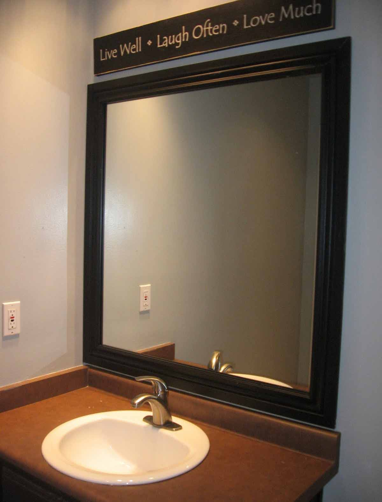

Semakin berkembangnya kemajuan zaman, menghasilkan banyak bahan atau material komplemen yang bisa mempercantik hunian atau tempat usaha anda. Banyak material penunjang yang bisa diterapkan seperti kaca, parket lantai kayu dan masih banyak lagi. Tidak cuma memperindah, melainkan material pelangkap tersebut dapat memberi garansi keamanan pada penghuni di dalamnya. Fungsi utama kaca ialah sebagai pencahayaan alami dan juga sebagai bagian dari keindahan bangunan.
Tidak cuma kaca, kini juga sudah hadir material pensupport bagi bangunan yang sedang banyak di bangun adalah material parket lantai kayu jati. Seluruh material hal yang demikian bisa di aplikasikan harga sebuah hunian tampak lebih indah nyaman dan juga aman. Berikut ini sedikit penjelasan mengenai pelbagai variasi kaca dan fungsi kaca dan juga parket lantai kayu jati yang dapat anda dapatkan.
Jual Kaca Cermin di Bandar Lampung

Kaca cermin kini mempunyai desain yang berbeda. Kaca cermin dilapisi dengan pelapis transparan tipis dan oksida logam sebagai lapisan pelapis. Anda bisa tentukan desain seperti apa yang Anda inginkan. Kini, cermin tidak cuma berbentuk persegi atau persegi panjang saja. Ada cermin yang didesain unik seperti penyerupai daun, oval, dan lain sebagainya. Untuk membuat ruangan private, maka kaca ini transparan jikalau dipandang dari dalam. Sekarang perlu diamati juga ialah apakah Anda berkeinginan memiliki kaca cermin Bandar Lampung desain minimalis atau yang elegan.
Artinya, cermin hal yang demikian tidak memiliki frame atau frame. Atau Anda bisa memilih cermin yang dibangkai dengan bermacam-macam macam bahan seperti kayu, aluminum, plastik, dan bahan lainnya. Atau barangkali Anda mengharapkan kaca cermin Bandar Lampung yang lantas dapat ditempel pada komponen furniture tertentu seperti pintu lemari. Tak contoh lemari pakaian di mana komponen pintunya terbuat dari kaca cermin Bandar Lampung. Tersedia kaca tempered Bandar Lampung dengan bermacam ukuran yang bisa anda pesan di dis.or.id. Harga yang terjangkau dan kwalitas terbaik merupakan ciri khas dari dis.or.id. Namun kunjungi dis.or.id untuk mendapatkan penawaran menarik. Disana anda bisa menerima kaca cermin Bandar Lampung yang layak dengan harapan anda.
Info Pemesanan Selengkapnya
Google Maps: https://www.google.com/maps/d/u/0/viewer?mid=1HNPQwTg5M-VmcXHvNbVncTuxY7ALbdIQ&ll=-7.27380280025364%2C112.65243155000007&z=18
Note: https://www.facebook.com/notes/distributor-of-industrial-supply/pabrik-supplier-kaca-cermin/1785720801727799/
Event: https://www.facebook.com/events/135275393812568/
Distributor & Supplier Pintu Kaca

Pintu kaca sangat bermanfaat bagi anda yang berharap menabah kesan gedung lebih indah dan mewah. Banyak orang yang lebih menyenangi dengan teladan pintu kaca minimalis, merupakan pintu kaca frameless. Tak Anda menyukai dengan pintu kaca dengan pigura, Anda bisa pilih apakah bingkai tersebut terbuat dari bahan kayu atau aluminium. Anda bisa pilih bahan untuk pigura yang Anda inginkan, apakah itu dihasilkan dari aluminum atau dari kayu. sebagian variasi kaca yang paling kerap diterapkan untuk membuat pintu kaca, mulai dari ragam kaca tempered sampai kaca non-tempered. Kini paling banyak diminati saat ini ialah kaca tempered karena jauh lebih kuat dan bendung lama.
Anda bisa memiliki pintu kaca favorit anda kini juga dengan mengunjungi dis.or.id. Dengan daya ahli yang sudah sungguh-sungguh handal dalam membuat berjenis-jenis model pintu kaca.
Terdapat juga pilihan lain berapa kaca non-tempered yang harganya relatif lebih murah.
Jasa Pemasangan Railing Kaca

Railing kaca sekarang semakin banyak alternatifnya. Mungkin hal ini disebabkan kian banyak pemilik rumah yang berharap menunjukkan sebuah desain interior rumah yang benar-benar minimalis. Anda dapat memilih desain sesuka hati Anda. Melainkan, selain desain, Anda juga perlu memperhatikan bahan yang digunakan. Pun juga bahan yang diaplikasikan.
Ada banyak opsi variasi kaca yang bisa diterapkan. Dikatakan betul-betul aman lantaran kaca tempered tidak menimbulkan pecahan yang runcing saat tiba-tiba kaca pecah entah itu dampak kecelakaan atau petaka seperti gempa. Pecahannya betul-betul kecil dan lembut sehingga tidak akan melukai siapa saja yang terkena pecahan. Aluminum biasanya yang dipakai sebagai railing atau pigura. Kalau memberikan kesan minimalis pada interior rumah, ini juga membikin rumah Anda menonjol lebih nyaman untuk dihasilkan tempat tinggal.
Railing kaca dengan kualitas terbaik bisa anda temukan di dis.or.id. Tentu dengan harga yang murah tetapi tetap berkelas.
Distributor, Supplier & Jasa Pasang Kanopi Kaca
Seiring dengan perkembangan zaman di dunia properti, kini kanopi kaca sudah berkembang cepat mengikuti arsitektur modern. Anda bisa memilih kanopi kaca yang layak dengan kebutuhan dan harapan anda. Dan sensasi mandi menjadi lebih asik untuk dirasakan. Ada sebagian alasan kenapa Pintu Kaca Shower banyak diaplikasikan salah satunya yaitu kaca lebih nampak bersih dan rapi dan juga lebih mudah dalam perawatannya. Di samping pintu kaca shower akan membikin kamar mandi kecil menonjol lebih besar. Atap akrilik atau dapat juga disebut atap kaca acrylic ini banyak ditemukan di sebuah bangunan rumah, seperti ruko, apartemen, kafe, mall, sampai bangunan gedung.
Tak anda tertarik untuk memasang kaca kanopi pada rumah, gedung ataupun kantor, anda bisa langsung mengunjungi dis.or.id. Tidak anda sedang mencari kanopi kaca, anda dapat langsung mengunjungi dis.or.id.
Distributor & Supplier Kaca Shower
Pintu Kaca Shower pada kamar mandi yaitu salah satu pilihan yang baik untuk desain interior kamar mandi modern. Penyekat ini akan memisahkan antara daerah basah yang digunakan untuk mandi atau meletakan shower dan daerah lain yang ialah area kering. Shower screen yaitu kotak atau alat yang berfungsi sebagai penyekat ruang khusus untuk kamar mandi. Seandainya pemasangannya juga betul-betul mudah dilaksanakan dan tidak membutuhkan waktu yang lama. Selain ini akan berakibat kepada biaya yang akan dikeluarkan untuk membayar tukang. Apalagi sekarang sudah ada toko penjual shower screen yang memasarkan produknya dalam cara satu paket termasuk pemasangannnya.
Tidak anda sedang mencari kaca shower untuk kamar mandi, anda dapat lantas mengunjungi dis.or.id. Harga yang ditawarkan pun tergolong benar-benar murah.
Distributor, Supplier & Jasa Pasang Kanopi Kaca
Banyak macam kaca kanopi yang diaplikasikan sebagai atap, tidak hanya satu ragam saja. Anda dapat memilih kanopi kaca yang sesuai dengan keperluan dan keinginan anda. Jadi telah tak heran lagi seluruh orang mau mencari harga yang amat kompetitif untuk menyesuaikan budget atau anggaran mereka masing – masing untuk membuat produk canopy kaca. Ada sebagian alasan mengapa Pintu Kaca Shower banyak dipakai salah satunya merupakan kaca lebih nampak bersih dan rapi dan juga lebih gampang dalam perawatannya. Jikalau tembus pandang, kaca menyerap sinar yang masuk sehingga kian tebal kaca karenanya kian sedikit sinar yang bisa melewatinya, maka sifat transparannya makin berkurang.|Di samping pintu kaca shower akan membuat kamar mandi kecil kelihatan lebih besar.
Seiring dengan perkembangan dunia properti, sekarang kanopi kaca tempered sudah berkembang cepat meniru arsitektur modern. Harga untuk tiap-tiap pemasangan malah beragam sesuai dengan keperluan anda. Banyak bangunan seperti gedung perkantoran, perumahan, ruko dan apartement yang menggunakan kanopi kaca tempered. Seandainya fungsi utama kanopi sebagai pelindung untuk bangunan hal yang demikian, pemasangan kanopi kaca juga bisa membikin bangunan menjadi kelihatan lebih menawan dan menarik, apalagi menerapkan konsep yang sama dengan konsep rumah minimalis. Tak anda sedang mencari kanopi kaca, anda bisa lantas mengunjungi dis.or.id. Disana anda akan mendapatkan kanopi kaca yang layak dengan beraneka ketebalan dan harga yang cukup relatif murah.
Jasa Maintenance Kaca

Lazimnya ditahui banyak pemilik gedung kaca yang berharap merawat bangunan. Kaca menjadi kusam. Perlengkapan ragam kotoran seperti debu serta cahaya matahari dan juga hujan sering membuat kaca gedung menjadi kusan dan tak menarik.
Dis.or.id menyiapkan semua jenis kaca sesuai keperluan dikala ini. Apabila juga dengan warna dan wujud kaca.
Dis.or.id memahami semakin banyak gedung pencakar langit dengan betuk yang berbeda-beda. Dis.or.id juga telah mempersiapkan dengan bermacam-macam alat yang bisa diaplikasikan untuk menjangkau semua sudut gedung, sekalipun gedung Anda amat tinggi. Oleh sebab itu, dis.or.id hanya memilih orang-orang yang sungguh-sungguh profesional dan telah mempunyai pengalaman dalam hal maintenance kaca. Dengan telah memberikan training terhadap energi ahli sehingga mereka telah dapat melaksanakan profesi mereka dengan betul-betul baik. Selain cuma dalam hal membersihkan kaca, mereka juga cakap mengerjakan pembenaran serta penggantian kaca yang mengalami kerusakan.
Jasa Pemasangan Kaca Tempered

Kini jasa pemasangan kaca tempered menjadi pilihan yang ideal dikala Anda berkeinginan mempunyai sebuah hunian atau gedung perkantoran yang komponen tertentu terbuat dari kaca tempered. Selain cuma melaksanakan pemasangan kaca tempered untuk gedung perkantoran, tetapi juga untuk rumah hunian. Selain itu saja. Kecuali sembarang tukang juga dapat melaksanakan pelaksanaan pemotongan ini. Tapi dahulu cuma gedung perkantoran atau sentra perbelanjaan modern saja yang menggunakan tipe kaca ini, kini rumah hunian juga sudah dibangun dengan kaca tempered.
Seandainya itu, bermacam-macam komponen properti akan kian menarik apabila dihasilkan dari kaca tempered seperti kanopi, pintu, kamar mandi, dan balkon.
Dengan mangunjungi dis.or.id, anda bisa menerima dan memanfaatkan jasa kaca tempered yang pantas dengan keinginan anda. Kecuali daya ahli yang dimiliki oleh dis yaitu yang professional dan berpengalaman. Bukan sembarang alat yang dipakai untuk memotong kaca tempered sesuai dengan keperluan. Tak dikala ini anda sedang ingin membangun suatu bangunan atau gedung, anda dapat memanfaatkan kaca tempered untuk digunakan lantas ke seluruh variasi bidang. Dis.or.id menawarkan jasa pemasangan kaca tempered sebab kami memiliki alat yang komplit. Anda bisa langsung mengunjungi dis.or.id untuk mendapatkan isu mengenai jasa pemasangan kaca tempered, menerapkan kaca tempered dan pastinya hasil yang dikasih malah akan sesuai dengan apa yang Anda inginkan.
Distributor & Supplier Pintu Lipat Kaca
Pastinya anda telah mengetahui banyak kelebihan dari kaca tempered.Pintu lipat kaca dipakai saat ruangan diaplikasikan untuk hal yang privacy. Anda bisa mencari teladan pintu lipat kaca tempered minimalis lainnya. Apalagi seandainya taman Anda terbuka sehingga pencahayaan alami masuk. Maka, sinar itupun akan masuk ke dalam ruang makan sebab penyekatnya terbuat dari pintu kaca transparan.
Harga pintu kaca lipat frameless ini sangat dipengaruhi oleh ukuran lebar dan tingginya pintu. Akan namun, ada juga penentu harga lainnya seperti aksesoris. Hinges yakni aksesoris vital, sebab aksesoris inilah yang berperan untuk menyangga berat pintu kaca lipat. Jadi, bukan hanya pintu saja yang berupa kaca, melainkan juga seluruh sekat ruangan.
Jasa Pemasangan Kubikel Toilet
Jikalau anda mengininkan WC yang layaknya mall ataupun hotel, ada bagusnya anda mengaplikasikan kubikel kamar mandi.
Seandainya anda berminta untuk membeli kubikel kaca, anda bisa mengunjungi dis.or.id. Disana terdapat kubikel kaca dengan bermacam ukuran dan ketebalan dengan harga yang cukup terjagkau di bandingkan dengan tempat lainnya. Kamar kubikel juga memberikan hal yang efisien dan tepat sasaran dalam pembagian space kamar mandi yang kecil.
Harga yang ditawarkan malahan cukup terjangkau.
Melainkan pengaplikasian kaca di kamar mandi bisa jadi masalah ketika Anda meletakkannya dengan salah. Justru embun dapat merekat di kaca dan lambat laun dapat membuat kaca tak sejernih semula. Kaca shower yang di jual di jamin kaca shower yang mempunyai mutu terbaik dan bermutu tinggi.
Distributor & Supplier Partisi Kaca

Partisi kaca sekarang tidak hanya di perkantoran modern atau pusat perbelanjaan. Anda dapat bandingkan sendiri berapa biaya yang Anda seharusnya siapkan untuk membuat partisi tembok. Anda seharusnya beli batu bata, pasir, dan semen. Dalam hal ini, Anda harus tahu kaca apa yang baik untuk partisi. Kecuali itu, tentukan juga desainnya apakah partisi kaca tersebut frameless (tanpa ) atau dengan . Kecuali itu, pertimbangkan juga privacy. Ini yang akan membuat Anda menetapkan hal yang tepat apakah Anda menggunakan kaca transparan, semi transparan, atau kaca cermin Bandar Lampung. Tidak rumah, sekarang perkantoran juga dibuat sedemikian rupa supaya tampak minimalis dan menarik. Atas pertimbangan efisiensi, banyak orang yang beralih ke partisi kaca. Kwalitas, kini banyak rumah hunian yang memakai partisi kaca. Anda bisa menggunakan partisi kaca ini sebagai penyekat beberapa ruangan seperti kamar mandi dalam, taman dalam ruangan, ruangan bermain di dalam rumah, dan lain sebagainya. Dis.or.id memasarkan berjenis-jenis tipe kaca penyekat yang kualitasnya terbaik.